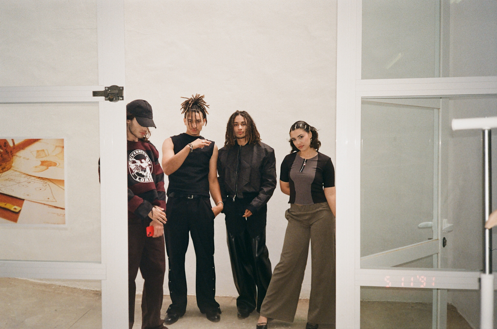

Look 1
A contoured seam defines the transition between knit textures as the silhouette adapts form through ferromagnetic articulation.
A contoured seam defines the transition between knit textures as the silhouette adapts form through ferromagnetic articulation.

Panelled construction composes a visual rhythm, bringing contrasting textures into a singular expression.

Faceted engineering introduces a sculptural surface, balanced by a transition between structured and fluid materials.

Curved panel seams define the upper form, giving way to a fluid sense of movement.

Layered surfaces establish a softened sense of continuity, allowing asymmetry to move with cohesion.

An asymmetrical silhouette unfolds from a sculpted foundation, as layered lengths and technical fabrications create a refined balance of structure and movement.
